135 项：67 段视频、68 张图片；新增 33 段视频。任务限定抓取物品与 RGB 排序。
下载 ZIP 后解压，打开其中的 index.html 可离线选片。原始模型包保持官方文件字节不变。
G1-D 成功演示使用官方机身与手臂和新增平行夹爪。原装 Dex3 未通过本次抓取验收。二维背景替换与图像增强在素材库中单独标记；没有使用 3DGS，也没有将本次独立 MuJoCo 演示作为 AutoData 扩增结果。
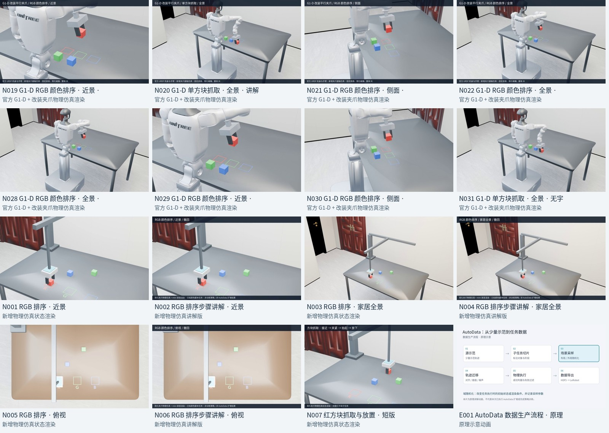
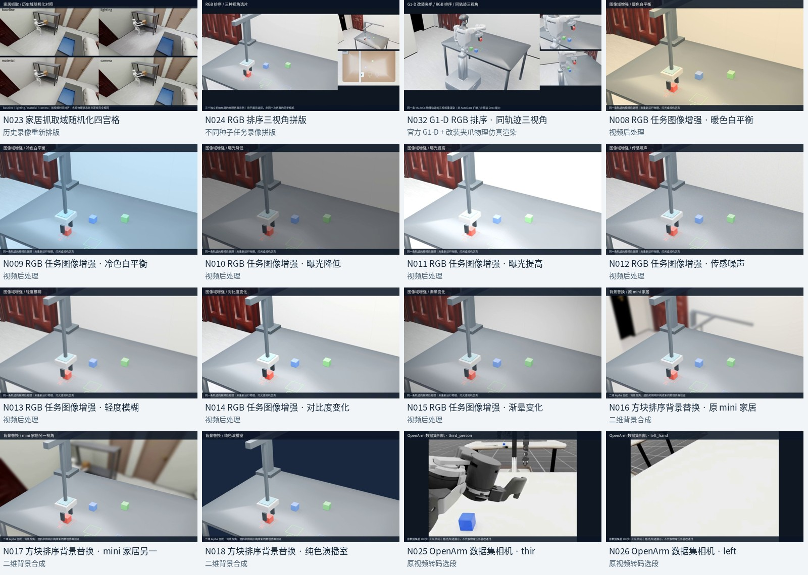
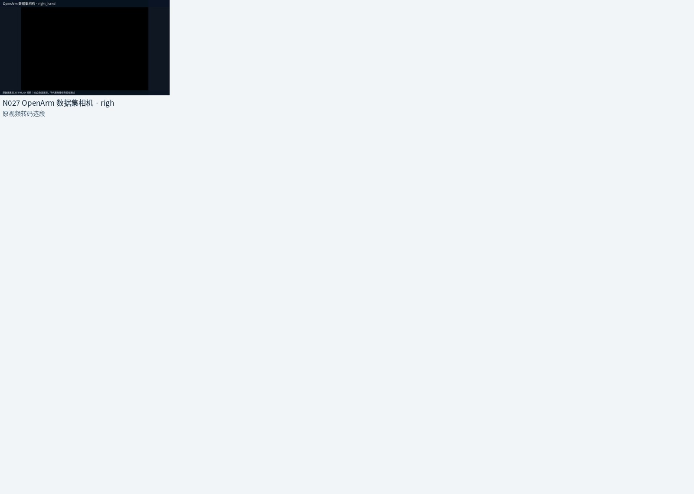
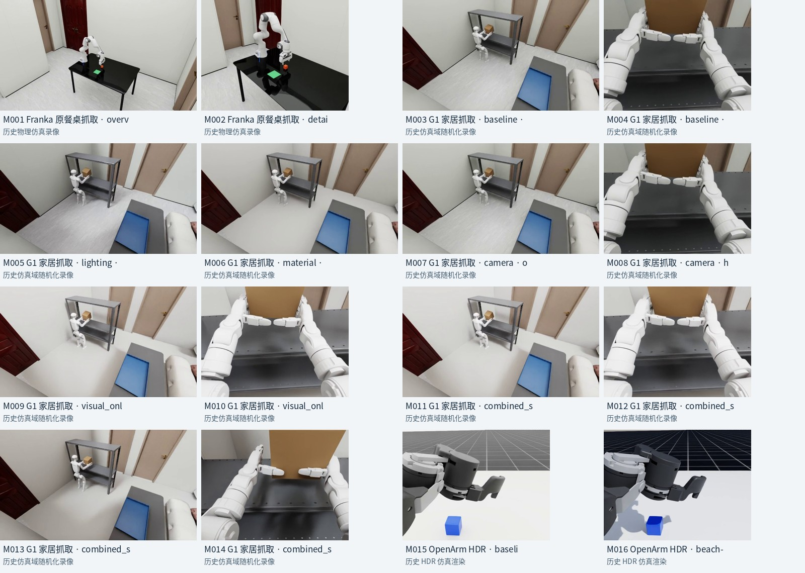
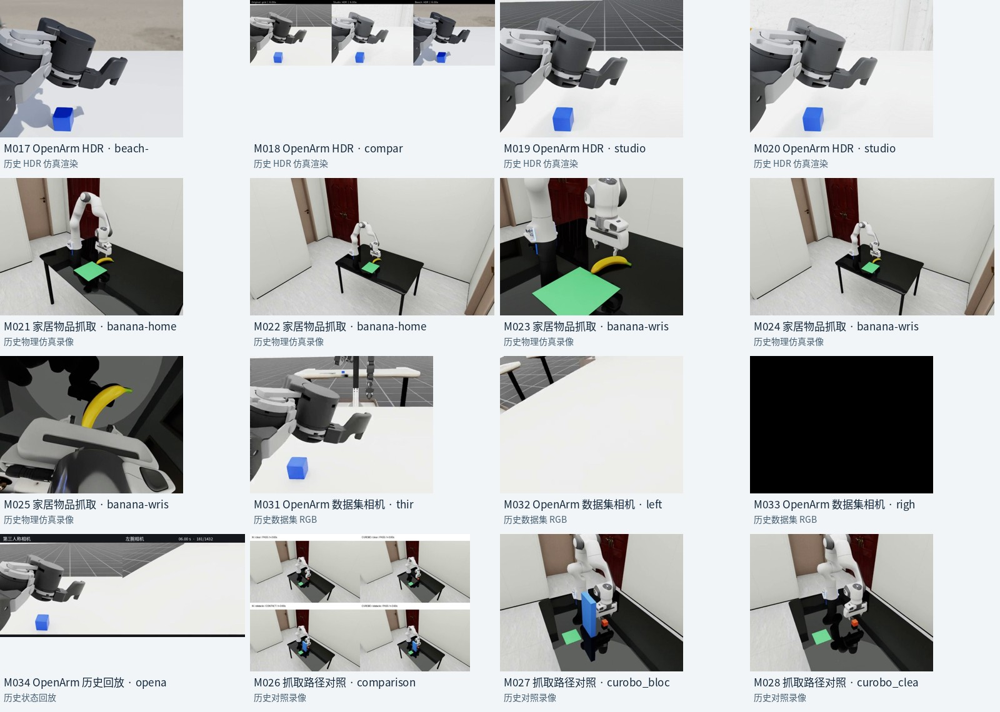
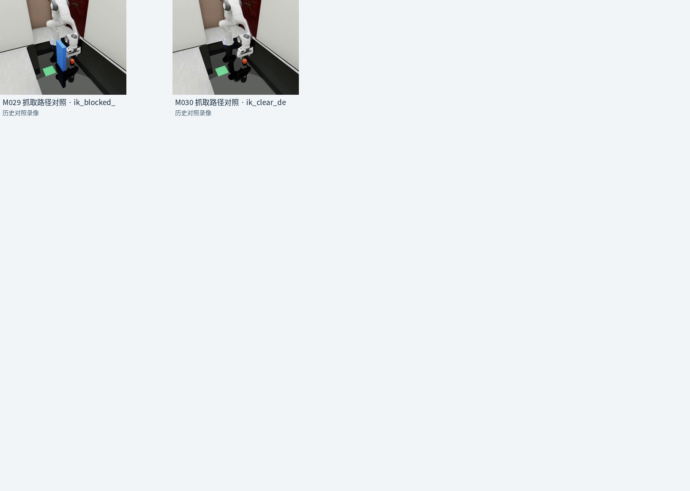
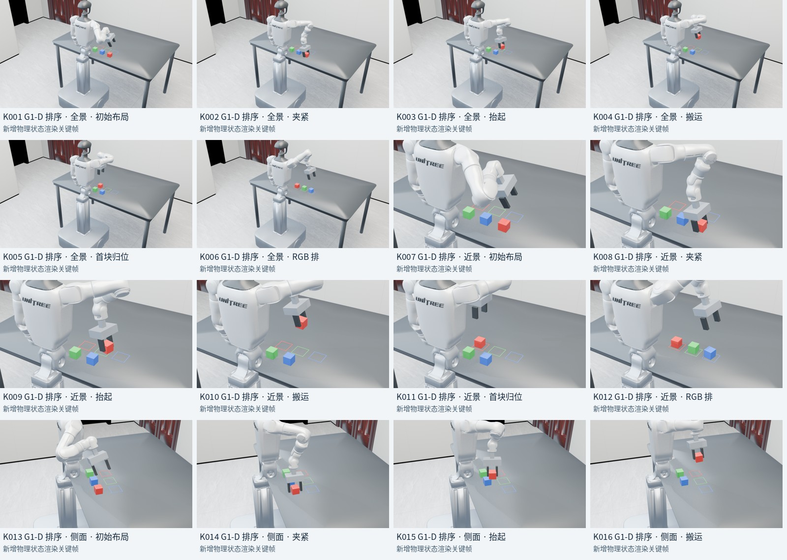
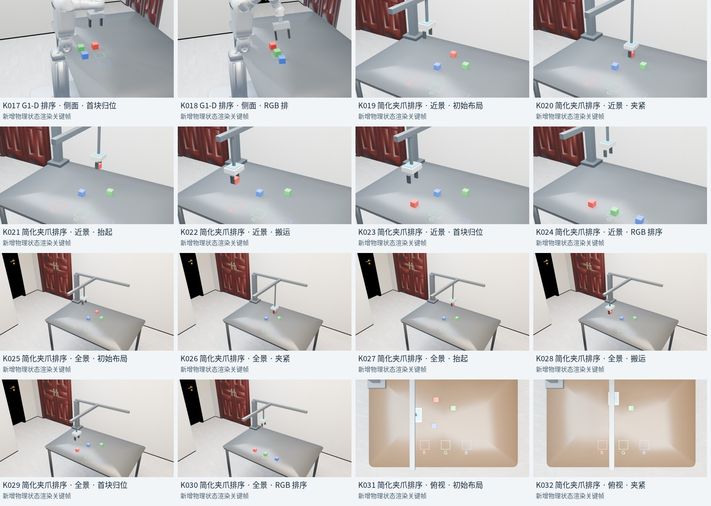
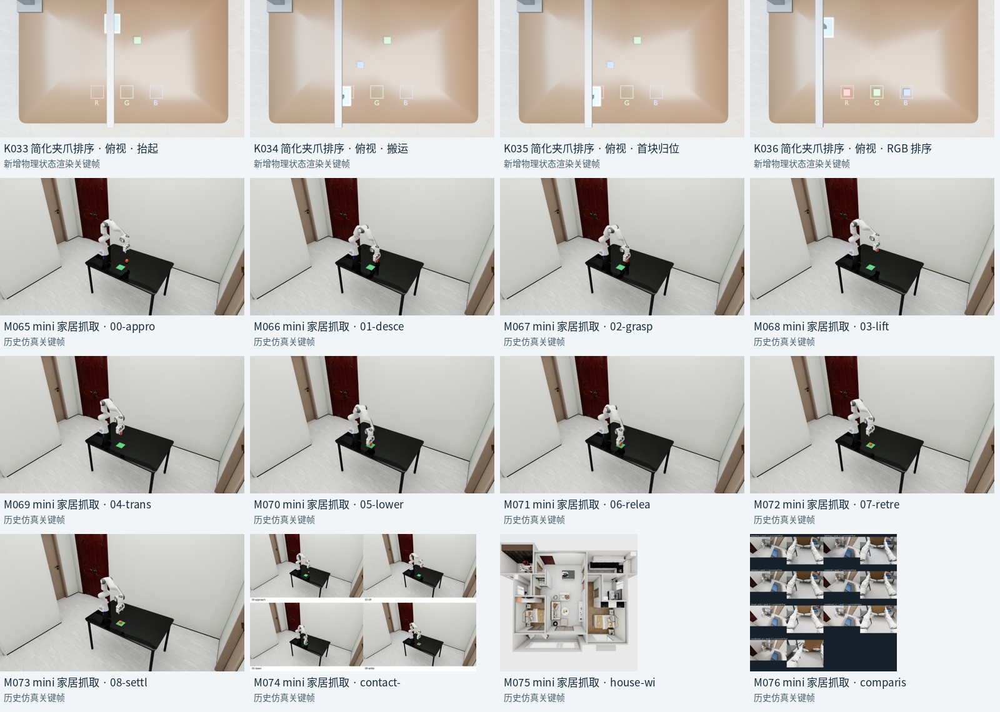
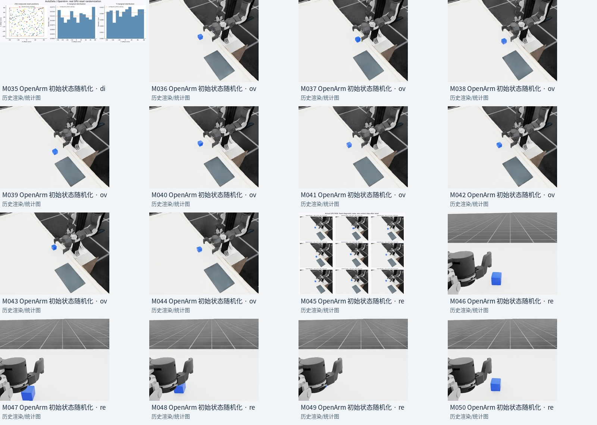
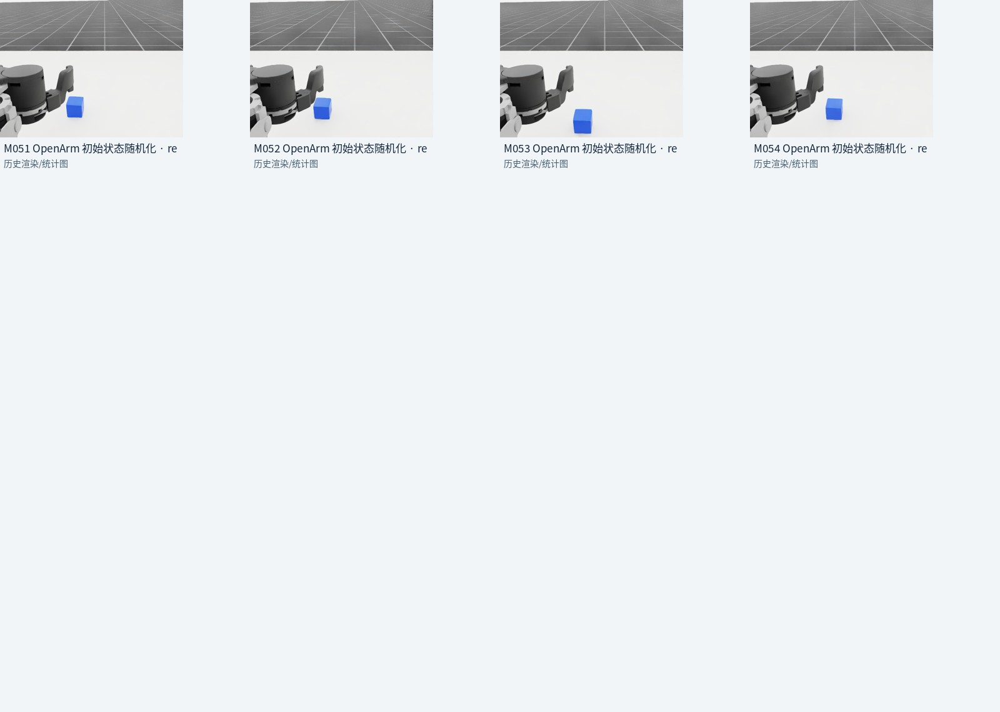